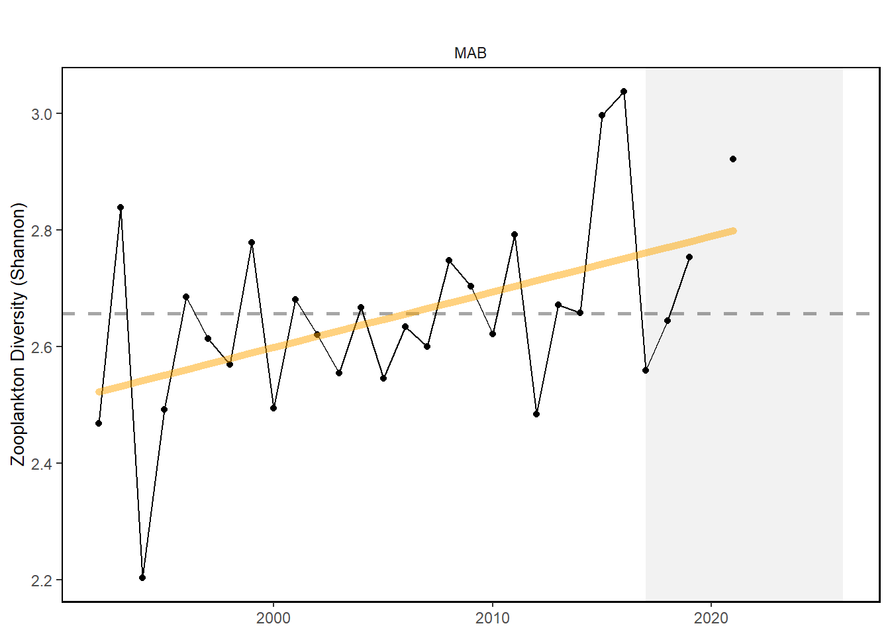
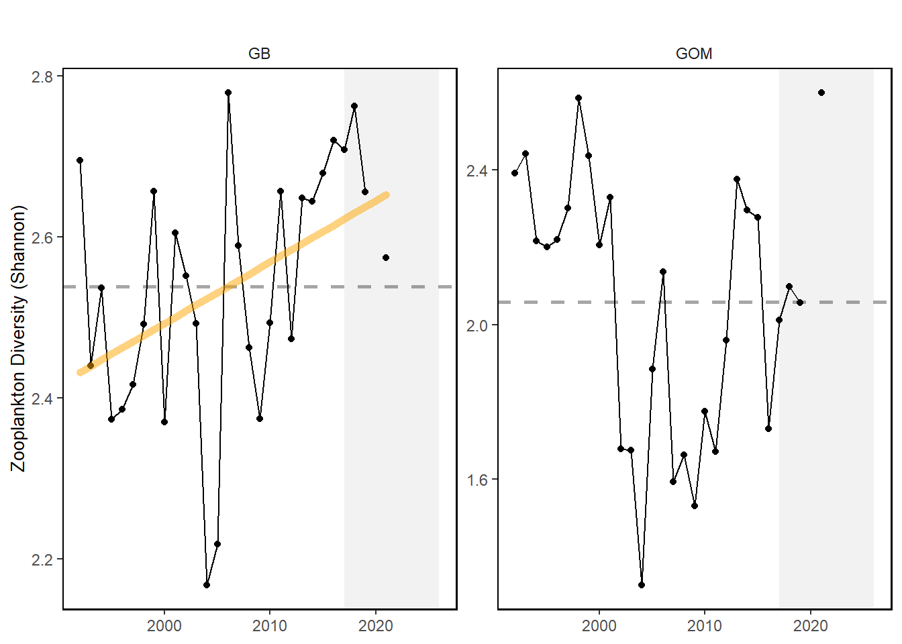

10 Zooplankton Diversity
Last updated July 23, 2026
Description: Effective Shannon diversity calculated using 42 zooplankton taxa collected from EcoMon cruises
Contributor(s): Harvey Walsh, Ryan Morse, Kevin Friedland, Mike Jones
Affiliations: NEFSC
Indicator Family:
Indicator Category:
Synthesis Theme:
10.1 Introduction to Indicator
Zooplankton represent a critical trophic link from primary producers to fish in marine ecosystems. Trends in zooplankton community diversity may indicate changes in trophic stability over time.
10.2 Key Results and Visualizations
Zooplankton diversity is increasing in the Mid-Atlantic and on Georges Bank, but shows no trend in the Gulf of Maine. There is no vessel correction for this metric, so indices collected aboard the research vessel Albatross IV (up to 2008) and the research vessel Henry B. Bigelow (2009 - Present) are calculated separately.
Mid-Atlantic

New England

10.3 Implications
Zooplankton community diversity varies with changes in dominance of taxa. Increasing zooplankton diversity in the Mid-Atlantic is due to increases in abundance of several taxa and stable or declining dominance of an important copepod species. This suggests a shift in the zooplankton community that warrants continued monitoring to determine if managed species are affected.
While still showing an overall increasing trend, the GB zooplankton community declined in diversity in 2021 due to the increase in abundance of the copepod Centropages typicus and salps. The GOM zooplankton community is usually dominated by Calanus finmarchicus, however their abundance decreased in 2021. This decrease plus an increase in abundance of other copepods (C. typicus, Metridia lucens, Oithona spp.), siphonophores, and pteropods resulted in high zooplankton diversity index in 2021.
10.5 Get the data
Point of contact: Harvey Walsh, harvey.walsh@noaa.gov; Ryan Morse, ryan.morse@noaa.gov
ecodata dataset: ecodata::zoo_diversity
Tech Doc link: https://noaa-edab.github.io/tech-doc/zoo_diversity.html
10.5.2 Accessibility Constraints
Request from Harvey Walsh, harvey.walsh@noaa.gov